Customizable filters
Put search in
your preferred order.
Drag filters into place, subtract the ones you don’t need, and keep your All results focused.
Local search. Finally done right.
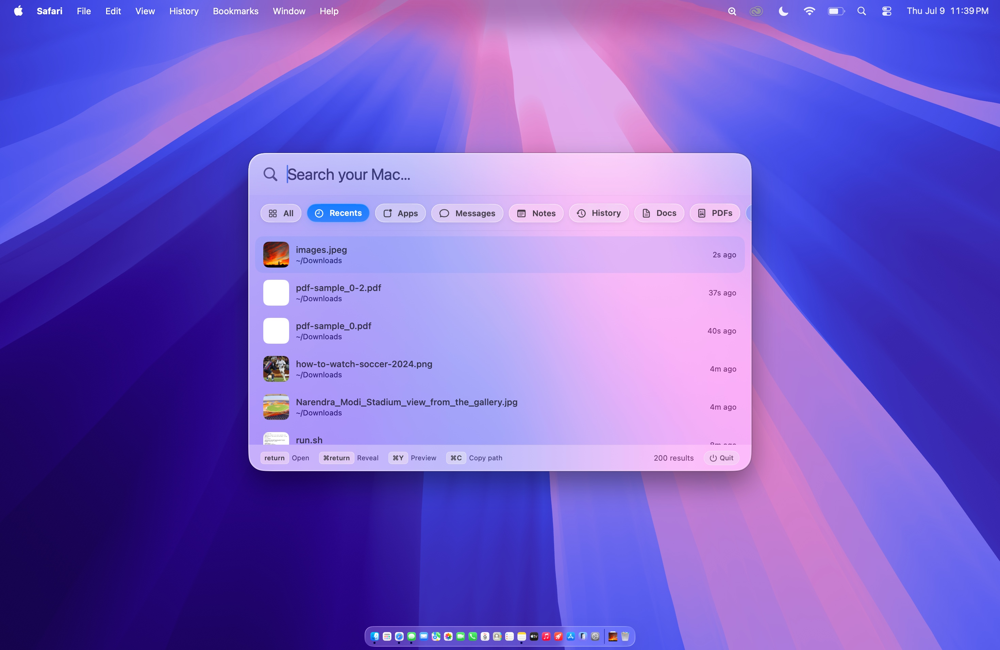
All brings files, apps, messages, notes, mail, calendar events, and connected folders into one ranked view, so the right result can surface without choosing a source first.
Switch to any dedicated filter with one click or cycle through them from the keyboard.
Explore every filter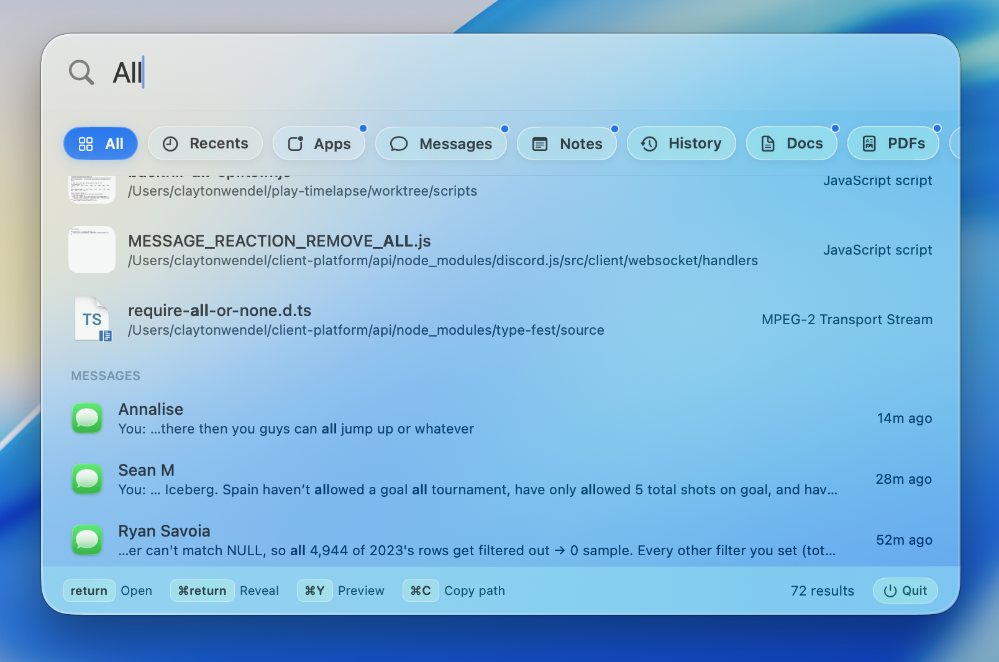
Spotlight and Finder Recents miss freshly saved files all the time. Beacon scans your filesystem directly — so screenshots, downloads, and exports appear the moment they land on disk.
Beacon checks Downloads and Desktop before any deep crawl, so your latest screenshot is always at the top.
Download BeaconFind any iMessage or SMS by word, phrase, or contact name. Type "Mom" and get Mom's messages — not every text containing the word "mom."
Results show the contact's name, a highlighted snippet, and when it was sent. Double-click to see the surrounding thread inside Beacon, then open the conversation in Messages.
Privacy & permissions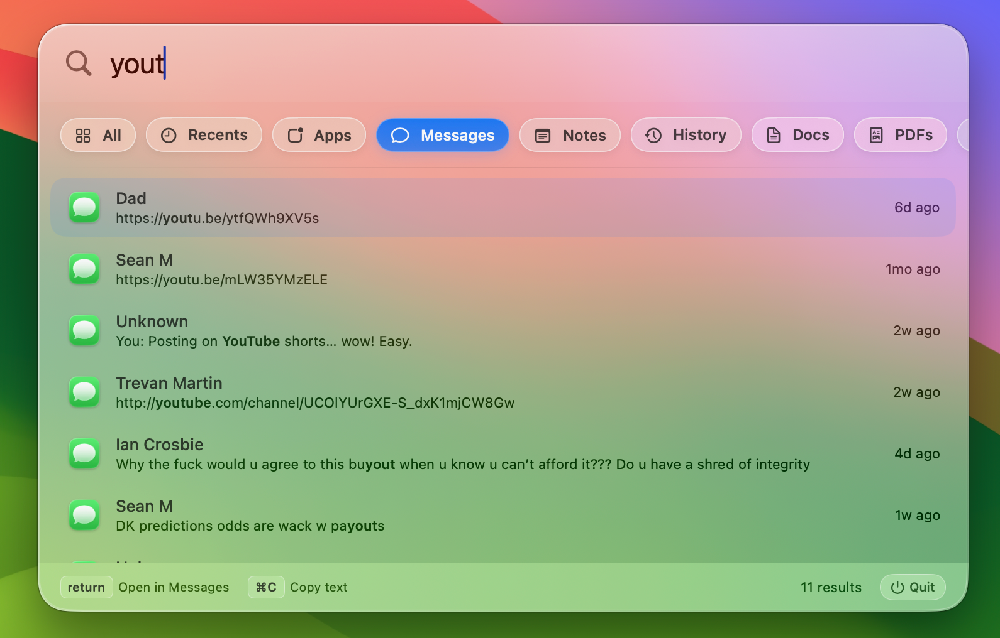
Search Safari, Chrome, Brave, Edge, and Arc history from one focused view. Favicons make results recognizable before you finish reading the title.
Press Return to reopen a result in your browser, or ⌘C to copy its link.
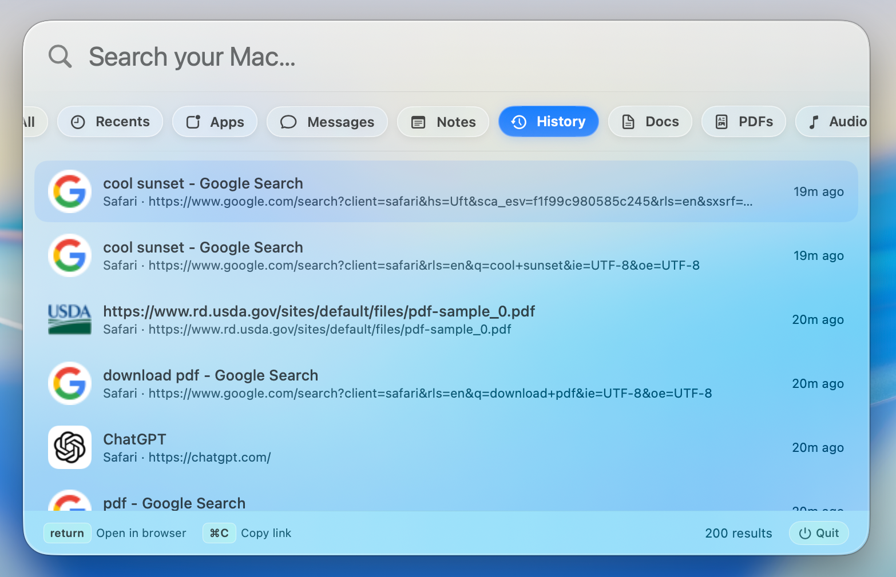
Type part of a project or directory name and Beacon brings matching folders forward instead of burying them beneath web suggestions.
Press Return to open a folder or ⌘Return to reveal it in Finder.
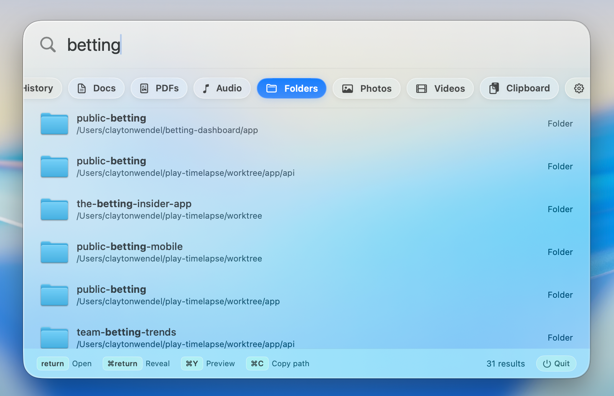
Beacon scans application folders directly, so downloaded and third-party apps appear even when Spotlight misses them.
Press Option + S, type a few letters, and hit Return. No mouse or launcher grid required.
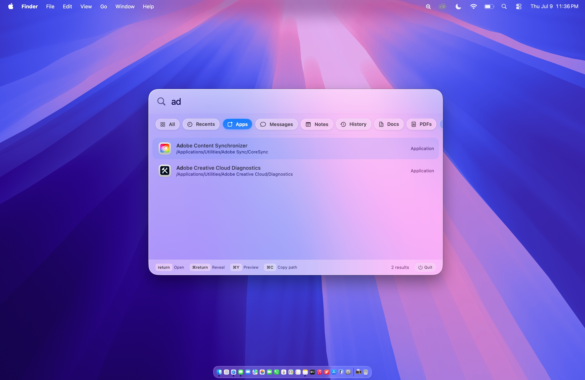
Search the title and body of every Apple Note locally, then open the matching note directly in Notes.
Beacon reads the Notes database on your Mac. Nothing is uploaded, indexed remotely, or used for training.
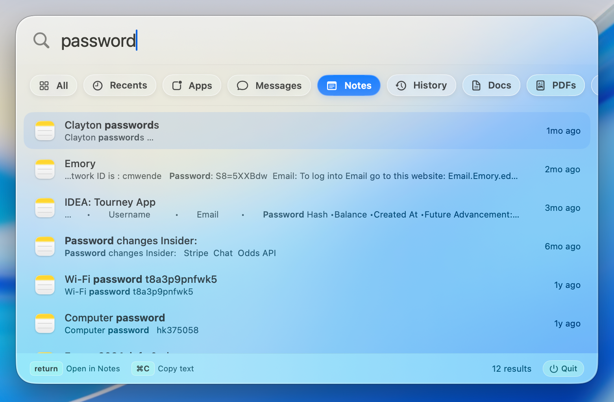
Make it yours
Enter Edit mode to remove filters, drag them into a new order, or restore something later. Your layout stays exactly where you left it.
A source only contributes to the blended All view when it is part of your filter layout.
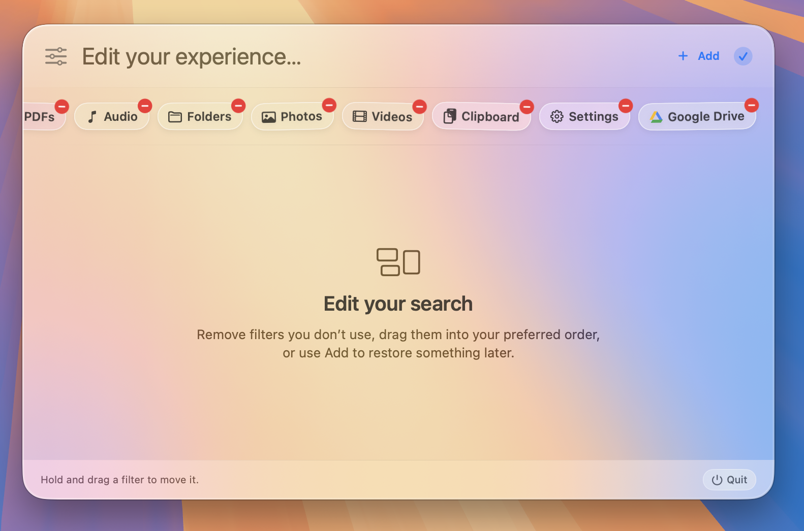
Connected sources
Add Word, Excel, PowerPoint, Mail, Gmail, Calendar, iCloud Drive, Google Drive, OneDrive, and Dropbox from one clean menu.
Cloud providers use their signed-in desktop sync app, while Gmail uses the account connected in Apple Mail. Beacon detects local setup and clearly explains what is missing.
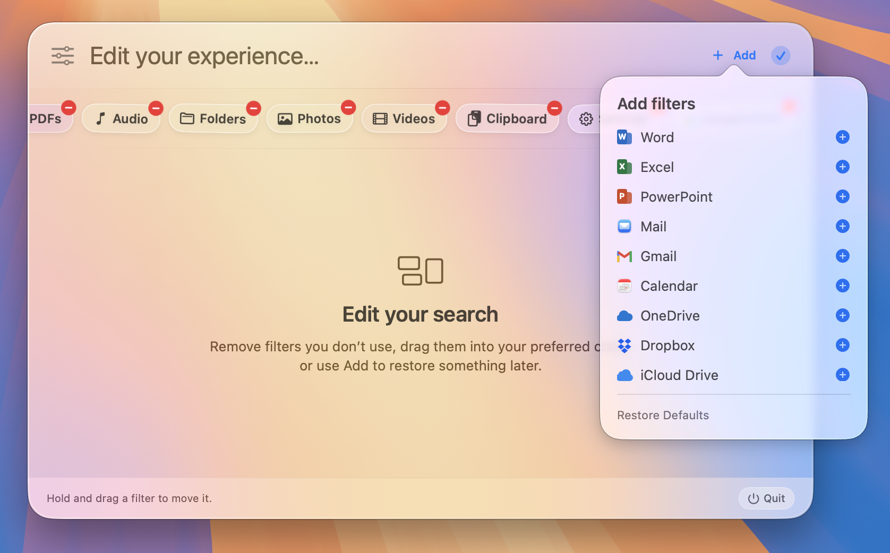
File search works immediately with no special access. Messages, Notes, Mail, Calendar, and browser history are read locally and never sent to a server.
Full Disk Access is optional. Beacon explains exactly when it is needed and takes you directly to the correct System Settings page.
Setup guide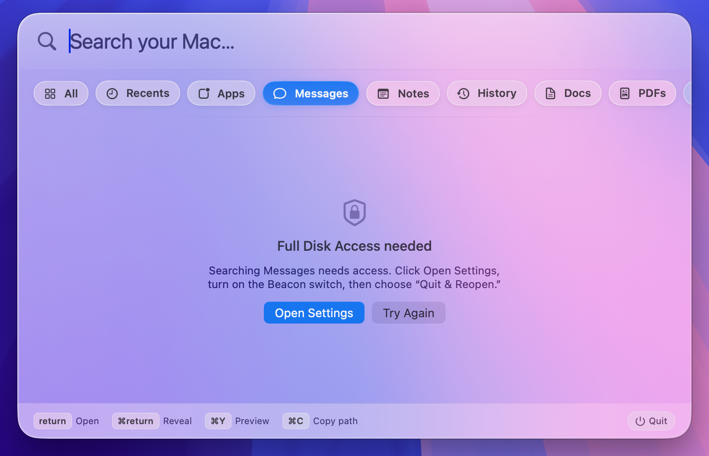
More built in
Preview files without opening them, copy paths and links, reveal results in Finder, and move through every result without leaving the keyboard.
Search Office documents, cloud folders, Mail, Gmail, and Calendar locally. Authenticated services such as Discord and Notion can come in a future update.
Beacon in action
Customizable filters
Drag filters into place, subtract the ones you don’t need, and keep your All results focused.
Add sources
Beacon tells you when a desktop sync app, Finder account, Apple Mail account, or local permission still needs setup.
Messages
Search by contact, phrase, or link across iMessage and SMS.
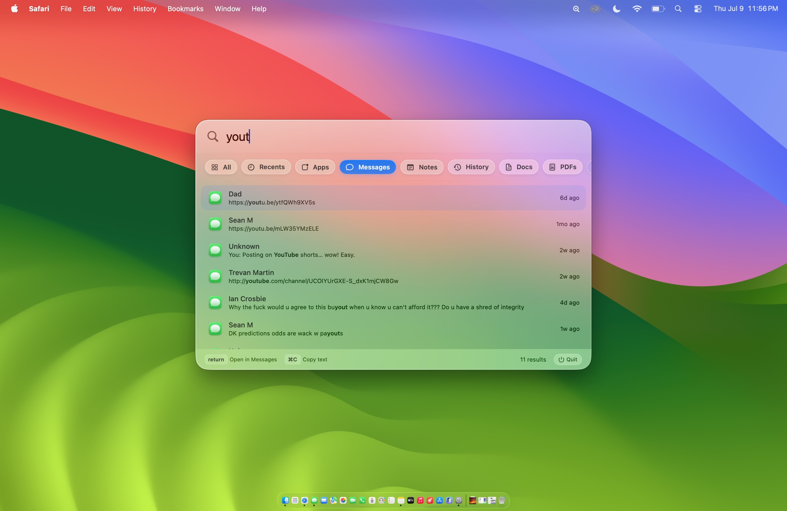
Browser history
Search Safari and Chromium history without reopening every browser.
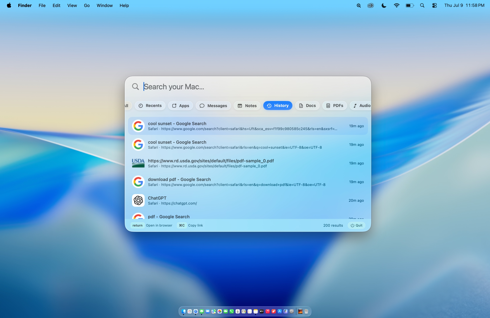
Folders
Find matching folders directly and reveal them in Finder.
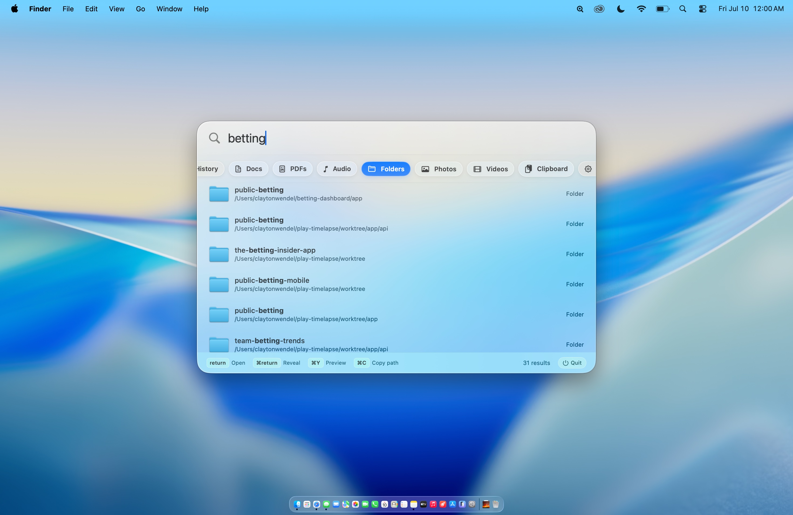
One hotkey. Every source on your Mac.
Blended, ranked results across every source in your chosen layout.
Filesystem-backed timeline of files you've opened, saved, or added.
Direct scan of .app bundles — including third-party downloads.
Full iMessage & SMS history search by word or contact.
Full-text search across every Apple Note — title and body.
Safari, Chrome, Brave, Edge, and Arc browsing history with favicons.
Focused filters for documents, PDFs, photos, videos, and audio.
Search your clipboard history without leaving the overlay.
Jump straight to Wi-Fi, Displays, Privacy, Battery, and more.
Office, Mail, Gmail, Calendar, iCloud, Google Drive, OneDrive, and Dropbox.
Add, remove, and reorder filters without changing how you search.
Spotlight got cluttered. Finder got confusing.
Beacon stays small and local.
Local files mixed with web suggestions, Siri cards, and dictionary results. Beacon keeps search focused — files, apps, and your data, ranked and stable as you type.
When Spotlight's index falls behind, files on your Desktop vanish. Beacon's Recents scanner reads the filesystem directly.
A download you haven't opened yet? Missing from Finder Recents. Beacon sees it the moment it hits disk.
Messages, Notes, Mail, Calendar, cloud folders, and Office files each have focused filters—so they never drown out file search.
Native SwiftUI, global hotkey via Carbon API (no Accessibility permission needed), Quick Look previews, and Developer ID signed releases. Zero third-party dependencies.
Version 1.0.4 · macOS 13 or later · Free
Beacon is open source. Clone the repo, run bash scripts/run.sh, and you're searching in under a minute.